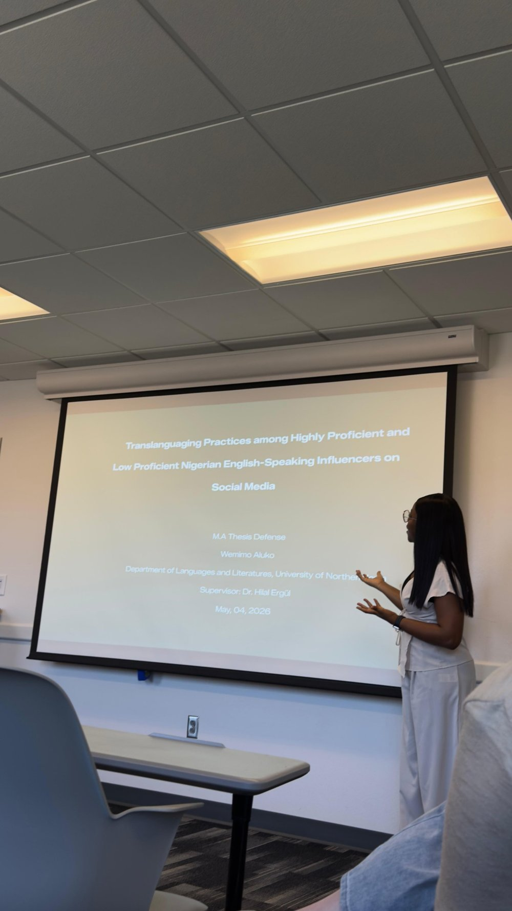

Research
How multilingual people learn and use language in real life
I study language in writing, in speech, and on social media. I'm especially interested in how AI tools can support language learners fairly and responsibly.
Current Work
Fair AI checks for multilingual writers
AI detectors often flag writing by non-native English speakers as AI-generated, even when students wrote it themselves. One Stanford study found these tools wrongly flagged non-native English essays 61% of the time on average. I'm studying how detectors and instructors judge multilingual students' writing, with the goal of creating fair guidelines for writing programs.
AI feedback and student writing growth
I'm exploring how feedback from AI chatbots affects multilingual students' academic writing over a full semester. The goal is a practical, research-based guide for using AI responsibly in writing classes.
Featured Study
How Nigerian Influencers Mix Languages Online
For my master's thesis, I studied 120 videos from six Nigerian TikTok and Instagram influencers to see how they move between English, Nigerian Pidgin, and Yoruba. I found that these language choices are deliberate: influencers use them to build authority, express identity, connect with their audience, and reach Nigerians abroad.
Read the abstract →Research in Action



Publications
Aluko, W., Fabunmi, V., & Adigun, A. (in press). Bridging the academic literacy gap: An AI-enhanced pedagogical framework for multilingual writing instruction in U.S. higher education. Educational Role of Language Journal. ( manuscript accepted)
Gordon, J., Darcy, I., & Aluko, W. (in press). Explicit L2 pronunciation instruction and intelligibility, comprehensibility, and accentedness in EFL learners. Proceedings of EPIP9: English Pronunciation, Issues & Practices. (manuscript accepted)
Aluko, W. (2026). Translanguaging practices among Nigerian influencers with varied English language backgrounds on social media [Master's thesis, University of Northern Iowa].
Fabunmi, V. A., & Aluko, W. (2026). Assessing the efficacy of AI writing assistants in L2 academic writing analysis. KOUNOUZ Journal, 2(1).
Presentations
Aluko, W. (2027). Translanguaging among Nigerian influencers on social media. AAAL 2027, Atlanta, GA. Accepted
Aluko, W. (2027). Translanguaging among Nigerian influencers on social media. TESOL 2027, Houston, TX. Accepted
Gordon, J., Darcy, I., & Aluko, W. (2026). Explicit L2 pronunciation instruction and intelligibility, comprehensibility, and accentedness in EFL learners. EPIP9, Manchester, UK.
Aluko, W., & Fabunmi, V. (2025). Assessing the efficacy of an AI writing assistant in L2 academic writing analysis. 17th Annual ELTT Conference, Nigeria.
Aluko, W. (2025). Linguistic analysis of an American native speaker of English and a Nigerian native speaker of English. Poster, 18th Annual SLA Student Symposium, University of Wisconsin-Madison.